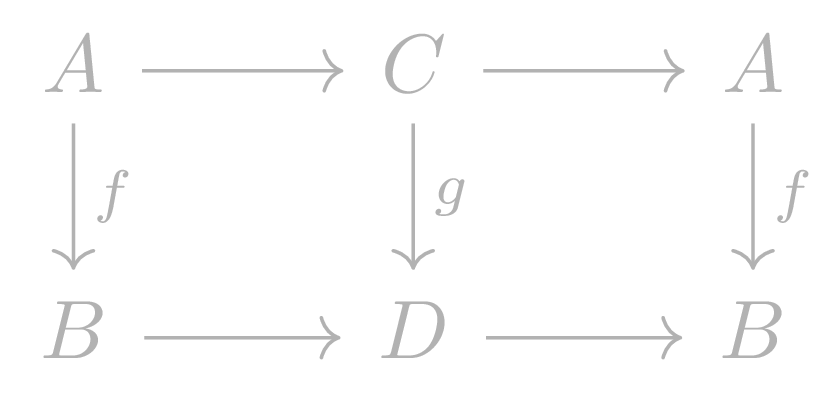
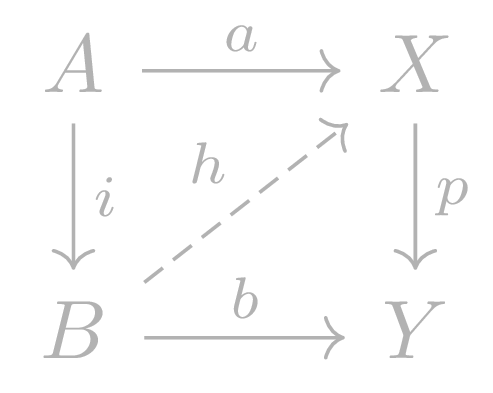

Model Categories
Table of Contents
\newcommand{\colim}{\operatorname{colim}} \newcommand{\Fib}{\operatorname{Fib}} \newcommand{\Cof}{\operatorname{Cof}}
1 Definitions
1.1 Retracts
Suppose \(\mathcal C\) is a category. A map \(f\) is a retract of a map \(g\) if \(f\) is a retract of \(g\) in \(\mathcal C ^\rightarrow\). That is, there is a commuting diagram of the following form:

where the horizontal composites are identities.
1.2 Right/Left lifting properties
Let \(i : A \rightarrow B\) and \(p : X \rightarrow Y\) be two morphisms in a category \(\mathcal C\). We say that \(i\) has the left lifting property with respect to \(p\) or that \(p\) has the right lifting property with respect to \(i\) if any commuting square of the following form has a diagonal filler:

We extend the above notion and say that a morphism \(p\) has the right (left) lifting property with respect to a class of morphisms \(\mathcal F\) if \(p\) has the left lifting property with respect to every morphism in \(\mathcal F\). We also denote \(r(\mathcal F)\) and \(l(\mathcal F)\) for the classes of morphisms with respectively the right and left lifting property with respect to every element in \(\mathcal F\).
1.3 Stability
We say that a class of morphisms \(\mathcal F\) is stable under pushouts (retracts) if the pushout (any retract) of \(f \in \mathcal F\) is also in \(\mathcal F\).
Let \(I\) be a well ordered set with initial element 0, viewed as a category. Let \(\mathcal F\) be a class of morphisms in a category \(\mathcal C\). Let \(X: I \rightarrow \mathcal C\) be a functor with the following properties: for all \(i \neq 0 \in I\), the colimit \(\colim_{j < i} X(j)\) is representable and the induced map \[\colim_{j < i} X(j) \rightarrow X(i)\] belongs to \(\mathcal F\). If the \(\colim_{i \in I} X(i)\) exists and the map \(X(0) \rightarrow \colim_{i \in I} X(i)\) belongs to \(\mathcal F\), then we say that \(\mathcal F\) is stable under transfinite compositions.
We say a class \(\mathcal F\) is saturated if it is stable under retracts, pushouts and transfinite compositions.
1.4 Weak factorisation systems
A weak factorisation system in a category \(\mathcal C\) is a couple \((A,B)\) of classes of morphisms satisfying the following properties:
- Both \(A\) and \(B\) are stable under retracts;
- \(A \subset l(B)\), or equivalently \(B \subset r(A)\);
- any morphism \(f:X \rightarrow Y\) of \(\mathcal C\) admits a factorisation of the form \(f = pi\), with \(i \in A\) and \(p \in B\).
We can form weak factorisation systems from the small object argument.
Let \(\mathcal C\) be a locally small category with small colimits and a small set of morphisms \(I\). Assume there exists a cardinal \(\kappa\) such that for any element \(i:K \rightarrow L\) of \(I\), the functor \[\mathcal C(K,-): \mathcal C \rightarrow \textbf{Set}\] commutes with colimits indexed by \(\kappa\)-filtered well ordered sets. Then \((l(r(I)), r(I))\) is a weak factorisation system. Furthermore, \(l(r(I))\) is the smallest saturated class containing \(I\).
Let \(\mathbb A\) be a small category and \(I\) a small set of morphisms of presheaves over \(\mathbb A\). Then the couple \((l(r(I)), r(I))\) is a weak factorisation system in \(\widehat{\mathbb A}\).
1.5 Model Categories
A model category is a locally small category \(\mathcal C\) endowed with three classes of morphisms: weak equivalences \(W\), fibrations \(\Fib\) and cofibrations \(\Cof\), such that the following hold:
- The category \(\mathcal C\) has small limits and colimits;
- The class of weak equivalences satisfies 2-out-of-3;
- Both couples \((\Cof, \Fib \cap W)\) and \((\Cof \cap W, \Fib)\) are weak factorisation systems.
2 TODO Ken Brown's Lemma
3 TODO Properties
Let \(\mathcal C\) be a category together with two classes of morphisms \(\mathcal F, \mathcal F '\). Then the following holds:
- \(\mathcal F \subset r(\mathcal F')\) if and only if \(\mathcal F' \subset l(\mathcal F)\);